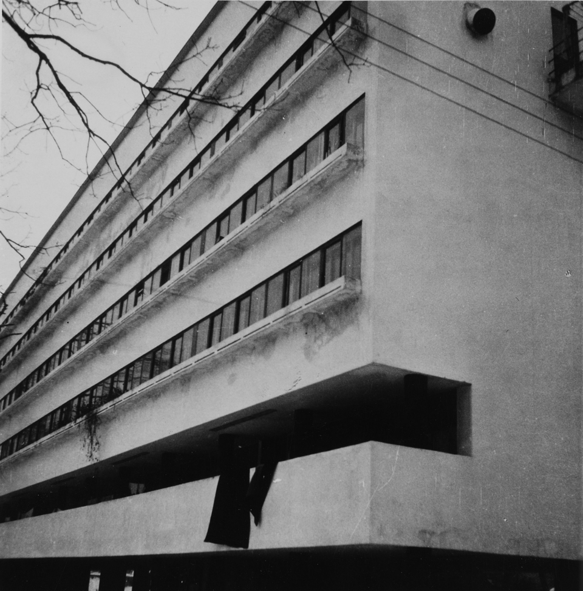
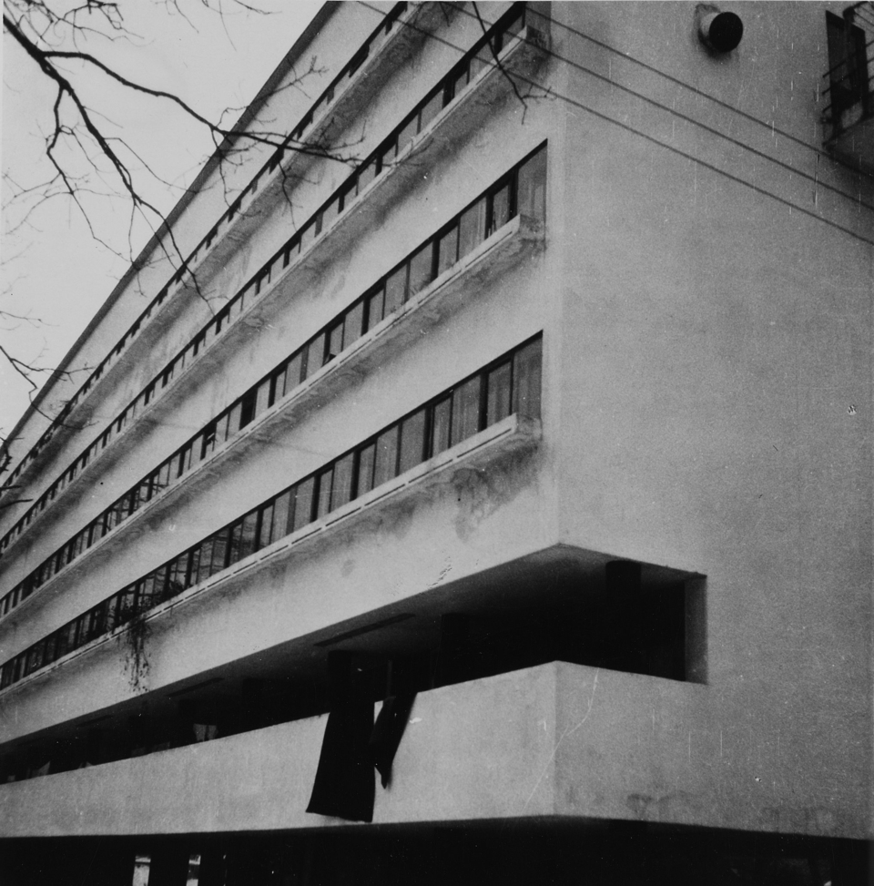
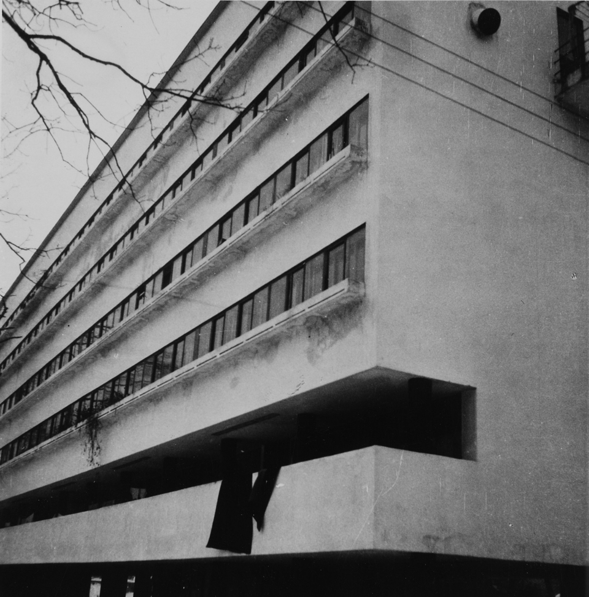

Дом Наркомфи́на — один из знаковых памятников архитектуры советского авангарда и конструктивизма. Построен в 1928—1930 годах по проекту архитекторов Моисея Гинзбурга, Игнатия Милиниса и инженера Сергея Прохорова[2] для работников Народного комиссариата финансов СССР (Наркомфина). Автор замысла дома Наркомфина М. Я. Гинзбург определял его как «опытный дом переходного типа»[3]. Дом находится в Москве по адресу: Новинский бульвар, дом 25, корпус 1.
С 1980-х годов дом находился в аварийном состоянии, был трижды включён в список «100 главных зданий мира, которым грозит уничтожение»[4]. В 1986 начато исследование и работа над проектом реставрации дома по инициативе Владимира Гинзбурга; в 1998 году проект отмечен первой премией фестиваля «Зодчество». В 2016—2020 годах дом отреставрирован по проекту АБ «Гинзбург Архитектс». Результаты исследования и реставрации опубликованы[5][6]. Сейчас Дом Наркомфина — и памятник архитектуры, и жилой дом.
В 2021 году Музей современного искусства «Гараж» инициировал масштабное исследование Дома Наркомфина, в том числе истории жизни его создателей и обитателей на протяжении почти ста лет. Полученное знание становится основой экскурсионных маршрутов, публикаций, разнообразных публичных и просветительских проектов, выстроенных вокруг легендарного дома. Помимо этого, для жильцов дома, патронов Музея и владельцев карт GARAGE доступно кафе Дома Наркомфина, а на первом этаже жилого корпуса открылся книжный магазин.[7]
Дом Наркомфина, или 2-й дом Совнаркома (СНК) РСФСР , стал одним из экспериментальных домов, построенных по результатам теоретических исследований Секции типизации Стройкома РСФСР, созданной по инициативе М. Я. Гинзбурга и работавшей под его руководством в 1928—1929 годы (в работе также участвовали входившие в объединение ОСА М. О. Барщ, В. Н. Владимиров, А. Л. Пастернак, Г. Р. Сум-Шик). Как сказано в монографии Йоганнеса Крамера[нем.] «Das Narkomfin Kommunehaus In Moskau 1928—2012», «аналогичные устремления существовали в то же время и в Германии, где этими вопросами занимался Исследовательский институт экономической эффективности в строительстве и жилищном хозяйстве (RfG[нем.]), хотя полученные им результаты были менее радикальными и менее призрачными»[8].
Учреждению секции предшествовала работа в 1928 году комиссии Стройкома по отбору типовых проектов жилья для строительства. Комиссия пришла к выводу, что большинство известных на тот момент проектов не может быть использовано как типовые, поэтому для разработки типовых проектов была создана Секция типизации[9]. Подготовкой для работы над новым форматом жилья также стала работа над домом Госстраха на Малой Бронной (1926—1927, М. Я. Гинзбург и В. Н. Владимиров) и конкурс на «эскизный проект жилого дома трудящихся», проведённый журналом «Современная архитектура» (Гинзбург подал на конкурс проект «Коммунального дома А-1»). Выставка проектов конкурса состоялась в июне 1927 года[10].
Результаты исследования секции М. Я. Гинзбург доложил на пленуме Стройкома РСФСР, где было принято постановление, рекомендовавшее несколько разработанных жилых ячеек к массовому строительству, а остальные — к опытно-показательному, начиная с 1928 года. Согласно этому постановлению было построено шесть «экспериментальных коммунальных домов переходного типа» в Москве, Свердловске и Саратове. Все они служили для проверки результатов теоретических исследований Секции типизации и были созданы в рамках финансировавшейся государством программы экспериментального строительства 1929 года. Проект дома Наркомфина создан в 1928—1929 годы, строительство велось в 1929—1930 годы.
С. О. Хан-Магомедов называет дом Наркомата финансов самым интересным из шести экспериментальных домов[2].
Заказчиком жилого комплекса выступал нарком финансов РСФСР (1924—1929) Н. А. Милютин, известный как автор схем социалистического расселения и градостроительных концепций соцгорода[11], он же определил функциональные характеристики будущего здания[12]. Сотрудничество наркома Н. А. Милютина и архитектора М. Я. Гинзбурга началось несколько раньше, на строительстве дома Госстраха (1926—1927), — Милютин был инициатором строительства двух домов Госстраха в Москве. Идеи Н. А. Милютина об устройстве жилища воплотились при создании дома Наркомфина (Дома-парохода, или 2-го дома СНК).
По теории Милютина[13], «значительное повышение жизненного уровня рабочих и развитие обобществлённых форм обслуживания бытовых нужд трудящихся (общественное питание, ясли, детские сады, клубы и т. п.) постепенно уничтожают значение семьи как хозяйственного соединения. Этот процесс неизбежно приведёт, в конечном счёте, к полной переделке семейных форм общежития. <…> Задача раскрепощения женщины от мелкого домашнего хозяйства и вовлечение её в производство заставляет нас ставить вопрос о всемерном содействии этому процессу»[14].
Задача реализации этих принципов и была поставлена перед авторами проекта. Согласно Е. Милютиной, это был дом «нового быта»[15].
Сметная стоимость строительства составила 10 млн рублей[16]. Строительство жилого корпуса осуществлялось под наблюдением комиссии, возглавлявшейся Н. А. Милютиным. Коммунальный корпус и корпус прачечной строились без утверждённых чертежей[17].
Идеи, связанные с планировочной и объёмной структурой, так же как и с функциональным наполнением дома, изложены в публикациях журнала «Современная архитектура», докладе М. Я. Гинзбурга на пленуме Стройкома[2], а также в его книге «Жилище»[18].
Секция типизации Стройкома РСФСР ставила перед собой задачи разработки экономичного решения проблемы жилья без потери его качества и даже с повышением комфорта, в частности, благодаря естественному освещению не только жилых, но и подсобных зон, в т. ч. коридоров[19].
Гинзбург критически оценивал так называемое моссоветовское строительство («массовое жилищное строительство Москвы первых лет после революции»), считал «экономический эффект» доходного дома более высоким. Поэтому работа Секции началась с анализа типологии «дореволюционного «доходного дома» и её оптимизации.
Под строительство дома для работников Наркомата финансов в апреле 1929 года была отведена территория огородов, ранее принадлежавших двум усадьбам, жилые дома которых были выстроены в XIX веке по красной линии Новинского бульвара; в одном из этих домов в 1910—1922 годы жил Ф. И. Шаляпин и сейчас располагается его дом-музей. Территория полого спускается к Пресненскому пруду, который к 1925 году был осушен и засыпан, а питавшая его река Пресня забрана на этом отрезке в трубу[11].

Работа была начата с анализа ряда типов жилья в дореволюционном, так называемом «доходном доме». Анализ показал, что этот тип жилья при всем своем культурном убожестве и известной степени удовлетворял интересам средней и мелкой буржуазии и притом давал экономический эффект более высокий, чем например массовое жилищное строительство Москвы первых лет после революции.
